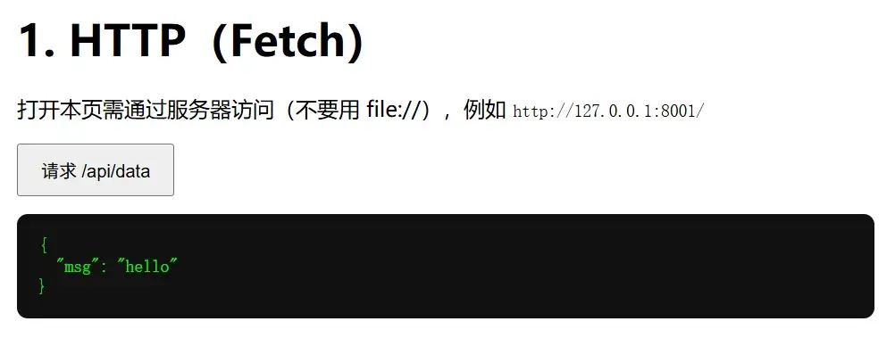
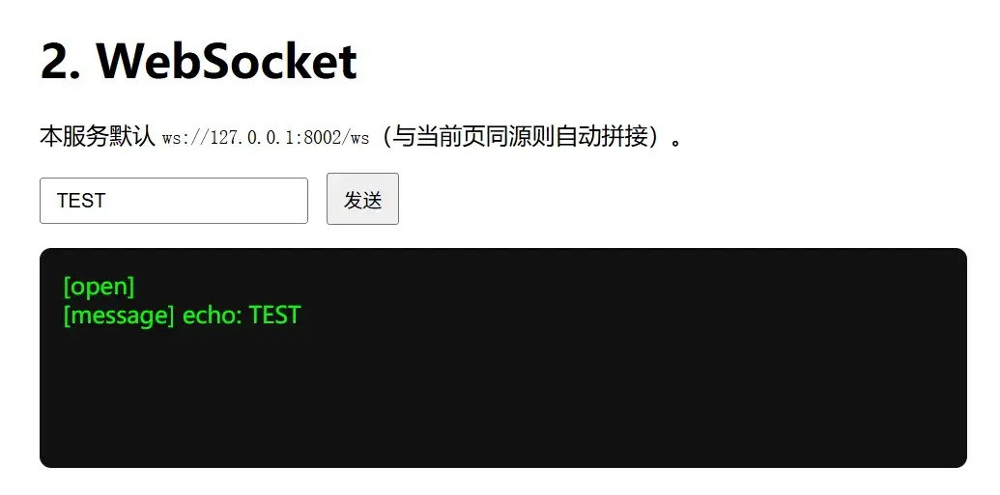
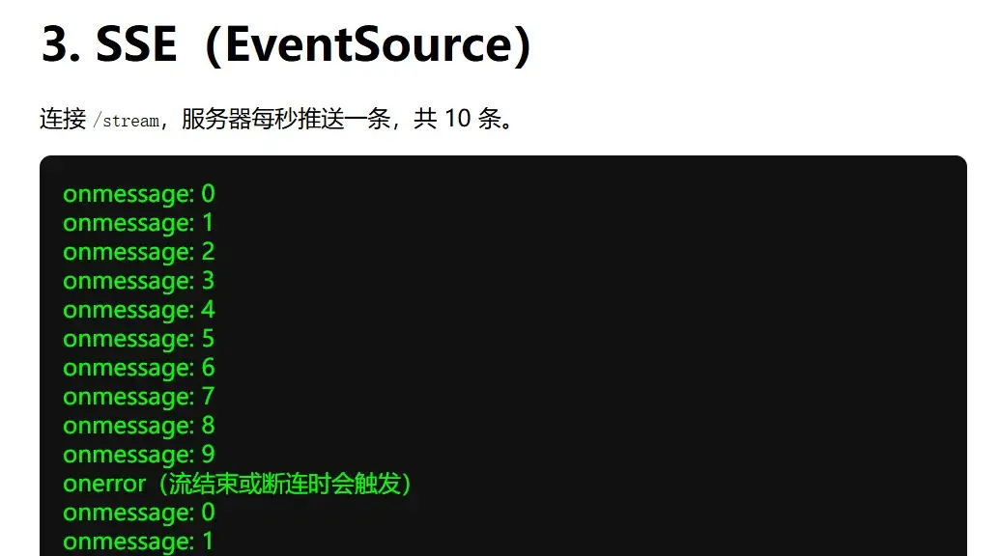
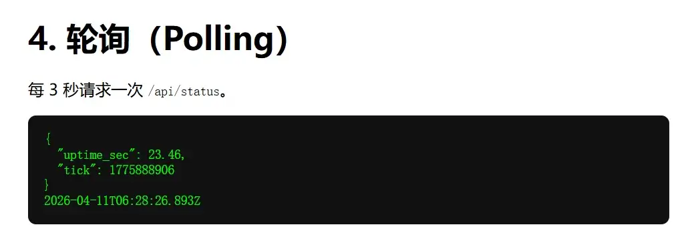
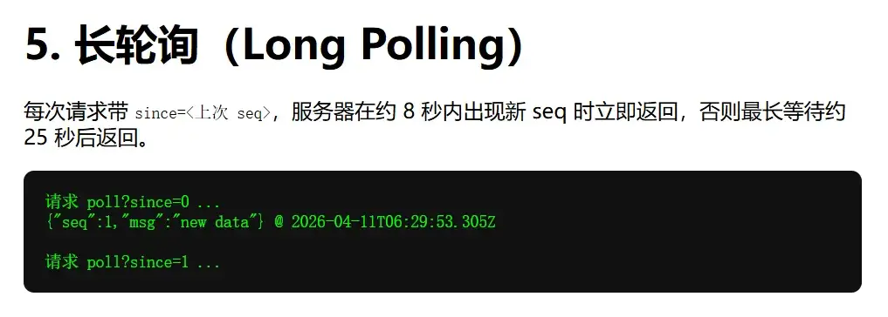
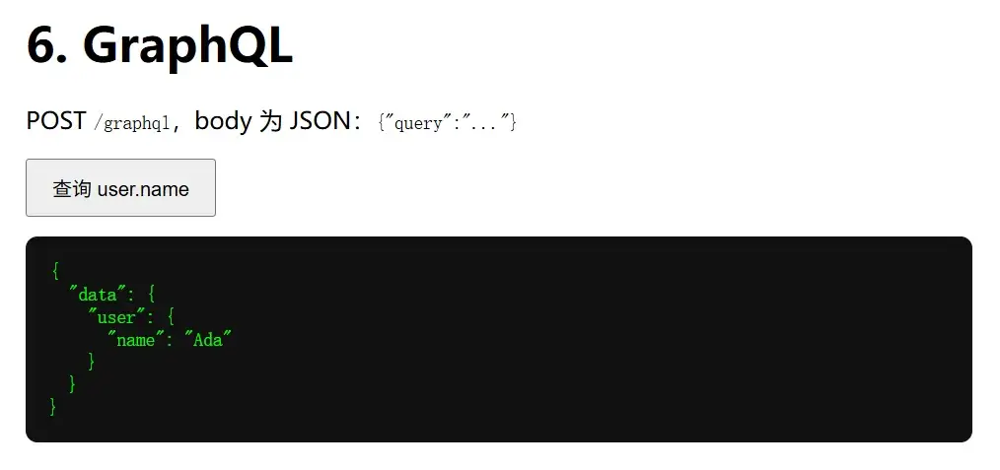

正文
总览
概述：
| 文件夹 | 内容 |
|---|---|
01_http | GET /api/data + 页面里 fetch |
02_websocket | WebSocket /ws + 页面里 WebSocket |
03_sse | GET /stream（text/event-stream）+ EventSource |
04_polling | GET /api/status + setInterval + fetch |
05_long_polling | GET /poll?since= 挂起直到有新 seq 或超时 + 链式 fetch |
06_graphql | Strawberry POST /graphql + 页面里 fetch + JSON body |
07_grpc | demo.proto + grpc_server.py / grpc_client.py + 已生成的 demo_pb2*.py；app.py 只用来托管说明页（http://127.0.0.1:8007/） |
08_form_submit | POST /submit 接收表单字段 + 纯 HTML <form method="POST"> |
使用方法：
python -m pip install -r requirements.txt
python -m uvicorn app:app --app-dir 01_http --reload --port 8001
python -m uvicorn app:app --app-dir 02_websocket --reload --port 8002
python -m uvicorn app:app --app-dir 03_sse --reload --port 8003
python -m uvicorn app:app --app-dir 04_polling --reload --port 8004
python -m uvicorn app:app --app-dir 05_long_polling --reload --port 8005
python -m uvicorn app:app --app-dir 06_graphql --reload --port 8006
python -m uvicorn app:app --app-dir 07_grpc --reload --port 8007
python -m uvicorn app:app --app-dir 08_form_submit --reload --port 8008心智模型：
Loading diagram…
HTTP
单次 请求-响应，无长连接。
Loading diagram…
{kind=link}

INFO: Uvicorn running on http://127.0.0.1:8001 (Press CTRL+C to quit)
INFO: Started reloader process [18684] using WatchFiles
INFO: Started server process [23244]
INFO: Waiting for application startup.
INFO: Application startup complete.
INFO: 127.0.0.1:51883 - "GET / HTTP/1.1" 200 OK
[数据流 06:19:33 | 01_http] 前端→后端 GET /api/data
[数据流 06:19:33 | 01_http] 后端→前端 200 application/json | {"msg": "hello"}
INFO: 127.0.0.1:51883 - "GET /api/data HTTP/1.1" 200 OK
WebSocket
先 升级协议 建立全双工通道，之后在同一连接上多次收发。
Loading diagram…
{kind=link}

INFO: Uvicorn running on http://127.0.0.1:8002 (Press CTRL+C to quit)
INFO: Started reloader process [16584] using WatchFiles
INFO: Started server process [29804]
INFO: Waiting for application startup.
INFO: Application startup complete.
INFO: 127.0.0.1:64857 - "GET / HTTP/1.1" 304 Not Modified
[数据流 06:22:37 | 02_websocket] 前端→后端 WebSocket 握手 /ws | 浏览器发起连接
INFO: 127.0.0.1:55746 - "WebSocket /ws" [accepted]
[数据流 06:22:37 | 02_websocket] 后端→前端 WebSocket accept | 连接已建立，可双向收发文本帧
INFO: connection open
[数据流 06:22:49 | 02_websocket] 前端→后端 WS 文本帧（前端→后端） | TEST
[数据流 06:22:49 | 02_websocket] 后端→前端 WS 文本帧（后端→前端） | echo: TEST
SSE
浏览器用 EventSource 发起 GET，服务端在同一响应体里持续写入 text/event-stream 分帧。
Loading diagram…
{kind=link}

INFO: Uvicorn running on http://127.0.0.1:8003 (Press CTRL+C to quit)
INFO: Started reloader process [5032] using WatchFiles
INFO: Started server process [34184]
INFO: Waiting for application startup.
INFO: Application startup complete.
INFO: 127.0.0.1:64359 - "GET / HTTP/1.1" 304 Not Modified
[数据流 06:25:12 | 03_sse] 前端→后端 GET /stream | 浏览器 EventSource 打开单向流
[数据流 06:25:12 | 03_sse] 后端→前端 200 text/event-stream | 开始 StreamingResponse 生成器
INFO: 127.0.0.1:64359 - "GET /stream HTTP/1.1" 200 OK
[数据流 06:25:12 | 03_sse] 后端→前端 SSE 推一条 default 消息 | {"wire": "data: 0\\n\\n"}
[数据流 06:25:13 | 03_sse] 后端→前端 SSE 推一条 default 消息 | {"wire": "data: 1\\n\\n"}
[数据流 06:25:14 | 03_sse] 后端→前端 SSE 推一条 default 消息 | {"wire": "data: 2\\n\\n"}
[数据流 06:25:15 | 03_sse] 后端→前端 SSE 推一条 default 消息 | {"wire": "data: 3\\n\\n"}
[数据流 06:25:16 | 03_sse] 后端→前端 SSE 推一条 default 消息 | {"wire": "data: 4\\n\\n"}
[数据流 06:25:17 | 03_sse] 后端→前端 SSE 推一条 default 消息 | {"wire": "data: 5\\n\\n"}
[数据流 06:25:18 | 03_sse] 后端→前端 SSE 推一条 default 消息 | {"wire": "data: 6\\n\\n"}
[数据流 06:25:19 | 03_sse] 后端→前端 SSE 推一条 default 消息 | {"wire": "data: 7\\n\\n"}
[数据流 06:25:20 | 03_sse] 后端→前端 SSE 推一条 default 消息 | {"wire": "data: 8\\n\\n"}
[数据流 06:25:21 | 03_sse] 后端→前端 SSE 推一条 default 消息 | {"wire": "data: 9\\n\\n"}
[数据流 06:25:22 | 03_sse] 后端→前端 SSE 流结束 | 已发送 10 条，连接将关闭
[数据流 06:25:25 | 03_sse] 前端→后端 GET /stream | 浏览器 EventSource 打开单向流
[数据流 06:25:25 | 03_sse] 后端→前端 200 text/event-stream | 开始 StreamingResponse 生成器
INFO: 127.0.0.1:64359 - "GET /stream HTTP/1.1" 200 OK
[数据流 06:25:25 | 03_sse] 后端→前端 SSE 推一条 default 消息 | {"wire": "data: 0\\n\\n"}
[数据流 06:25:26 | 03_sse] 后端→前端 SSE 推一条 default 消息 | {"wire": "data: 1\\n\\n"}
...
轮询 Polling
多次独立的 HTTP 请求，模拟「刷新感」。
Loading diagram…
{kind=link}

INFO: Uvicorn running on http://127.0.0.1:8004 (Press CTRL+C to quit)
INFO: Started reloader process [14632] using WatchFiles
INFO: Started server process [33876]
INFO: Waiting for application startup.
INFO: Application startup complete.
INFO: 127.0.0.1:55666 - "GET / HTTP/1.1" 200 OK
[数据流 06:28:05 | 04_polling] 前端→后端 GET /api/status | 定时轮询命中
[数据流 06:28:05 | 04_polling] 后端→前端 200 application/json | {"uptime_sec": 2.45, "tick": 1775888885}
INFO: 127.0.0.1:55666 - "GET /api/status HTTP/1.1" 200 OK
INFO: 127.0.0.1:55666 - "GET /favicon.ico HTTP/1.1" 404 Not Found
[数据流 06:28:08 | 04_polling] 前端→后端 GET /api/status | 定时轮询命中
[数据流 06:28:08 | 04_polling] 后端→前端 200 application/json | {"uptime_sec": 5.49, "tick": 1775888888}
INFO: 127.0.0.1:55666 - "GET /api/status HTTP/1.1" 200 OK
[数据流 06:28:11 | 04_polling] 前端→后端 GET /api/status | 定时轮询命中
[数据流 06:28:11 | 04_polling] 后端→前端 200 application/json | {"uptime_sec": 8.41, "tick": 1775888891}
INFO: 127.0.0.1:55666 - "GET /api/status HTTP/1.1" 200 OK
[数据流 06:28:14 | 04_polling] 前端→后端 GET /api/status | 定时轮询命中
[数据流 06:28:14 | 04_polling] 后端→前端 200 application/json | {"uptime_sec": 11.42, "tick": 1775888894}
长轮询 Polling
单次 HTTP 长时间占用，服务端在「有数据或超时」后才返回；客户端拿到结果后立刻再发起下一次。
Loading diagram…
{kind=link}

INFO: Uvicorn running on http://127.0.0.1:8005 (Press CTRL+C to quit)
INFO: Started reloader process [18264] using WatchFiles
INFO: Started server process [4792]
INFO: Waiting for application startup.
INFO: Application startup complete.
INFO: 127.0.0.1:52964 - "GET / HTTP/1.1" 200 OK
[数据流 06:29:47 | 05_long_polling] 前端→后端 GET /poll（长连接等待中） | {"since": 0}
INFO: 127.0.0.1:53624 - "GET /favicon.ico HTTP/1.1" 404 Not Found
[数据流 06:29:53 | 05_long_polling] 后端→前端 200 application/json（长轮询返回） | {"seq": 1, "msg": "new data"}
INFO: 127.0.0.1:52964 - "GET /poll?since=0 HTTP/1.1" 200 OK
[数据流 06:29:53 | 05_long_polling] 前端→后端 GET /poll（长连接等待中） | {"since": 1}
[数据流 06:30:01 | 05_long_polling] 后端→前端 200 application/json（长轮询返回） | {"seq": 2, "msg": "new data"}
INFO: 127.0.0.1:52964 - "GET /poll?since=1 HTTP/1.1" 200 OK
[数据流 06:30:01 | 05_long_polling] 前端→后端 GET /poll（长连接等待中） | {"since": 2}
[数据流 06:30:09 | 05_long_polling] 后端→前端 200 application/json（长轮询返回） | {"seq": 3, "msg": "new data"}
GraphQL
语义上仍是 HTTP 请求-响应，但路径常为 POST /graphql，要哪些字段写在 body 的 query 里。
Loading diagram…
{kind=link}

INFO: Uvicorn running on http://127.0.0.1:8006 (Press CTRL+C to quit)
INFO: Started reloader process [23384] using WatchFiles
INFO: Started server process [24648]
INFO: Waiting for application startup.
INFO: Application startup complete.
INFO: 127.0.0.1:56578 - "GET / HTTP/1.1" 200 OK
INFO: 127.0.0.1:56578 - "GET /favicon.ico HTTP/1.1" 404 Not Found
[数据流 06:35:41 | 06_graphql] 前端→后端 POST /graphql | {"query":"{ user { name } }"}
[数据流 06:35:41 | 06_graphql] 后端→前端 HTTP 200 | GraphQL 执行完成（响应体由 Starlette 写出）
INFO: 127.0.0.1:56578 - "POST /graphql HTTP/1.1" 200 OK
gRPC
浏览器页面若用本仓库里的 FastAPI，仅用于静态说明；真正 gRPC 在独立进程里，客户端多为命令行或其它服务。
Loading diagram…
**说明页（可选）**与典型 HTTP 静态资源相同：
Loading diagram…
表单提交
无 JavaScript 也可：表单 POST 后浏览器整页进入新文档。
Loading diagram…
INFO: Uvicorn running on http://127.0.0.1:8008 (Press CTRL+C to quit)
INFO: Started reloader process [24252] using WatchFiles
INFO: Started server process [24648]
INFO: Waiting for application startup.
INFO: Application startup complete.
INFO: 127.0.0.1:58761 - "GET / HTTP/1.1" 200 OK
INFO: 127.0.0.1:58761 - "GET /favicon.ico HTTP/1.1" 404 Not Found
[数据流 06:32:16 | 08_form] 前端→后端 POST /submit (application/x-www-form-urlencoded) | {"username": "admin"}
[数据流 06:32:16 | 08_form] 后端→前端 200 text/html | 整页 HTML 结果（浏览器将导航到新文档）
INFO: 127.0.0.1:55984 - "POST /submit HTTP/1.1" 200 OK